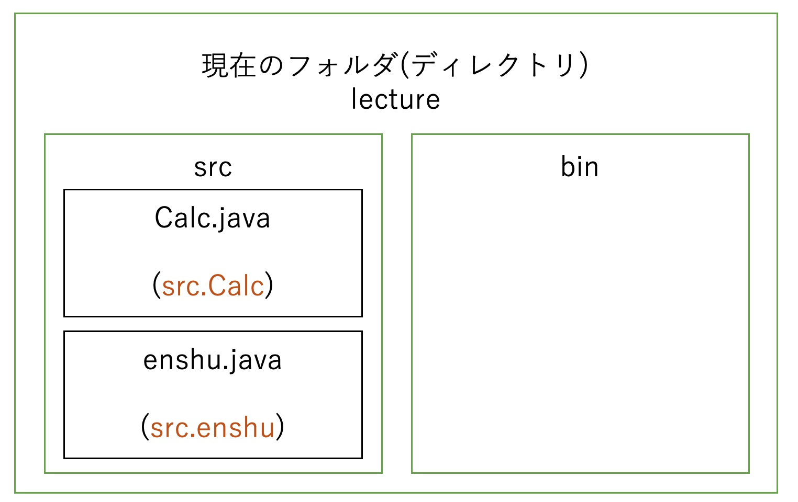
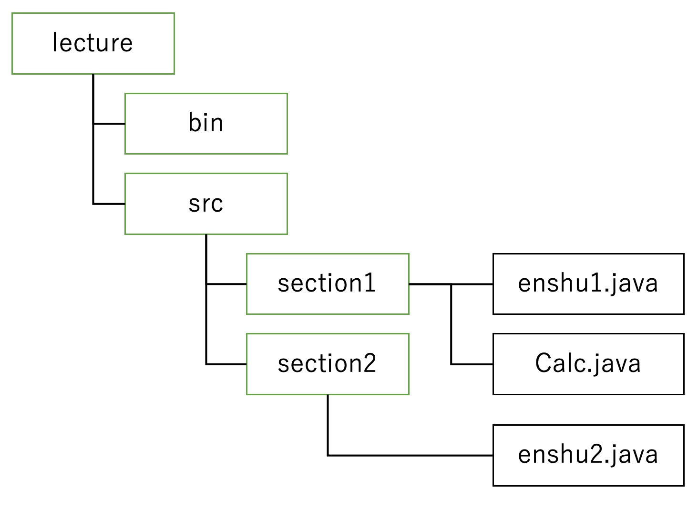

関数クラスを用いた開発¶
あらすじ¶
１つのシステムを 複数の部品に分けて作るメリットを紹介しました． 今回は機能ごとにファイルを分割するメリットと方法を紹介します．
機能ごとにファイルを分割¶
小規模，個人における開発の場合は大きな問題は起こりませんが， 会社では大規模なシステムを多くの人の手で設計することになります． そのため，1つのファイルを寄ってたかって編集するのは効率が悪いです．
そこで機能ごとにファイルを分割し，それぞれの担当が 自由にプログラムを書けるようにしましょう．
ファイル分割の弊害¶
ファイルを複数に分割しましょうと言ったものの分割したせいで起こる弊害もあります．
実行時に複数ファイルを選択する必要がある． ただただ，面倒な作業です．分ければ分けるほど，終わりのない地獄です． (言いすぎました．)
コンパイルの場合は，開発している人が各々に行うため，そこまで問題ではない．しかし，実行する場合は，ユーザが行うため無数にあるファイル実行はできない．
// n個のファイルに分けた場合
java file_1 file_2 ... file_n
ファイル間でメソッドを呼び出せない． 以下のようなプログラムにおいてmainファイルからCalcファイルの平均値を返すメソッド(機能)を使うとします．このままでは，「aveってどこのもんや」とJavaのコンパイラに怒られます(エラーが出ます)．
-- main.java --
public class main{
public static void main(String[] args){
int[] = {1, 2, 3};
average = ave(array);
}
}
-- Calc.java --
public class Calc{
public static double ave(int[] array){
平均値を返す処理;
}
}
え，じゃあ分割したらいいこともあるけど，その代償が大きすぎてだめやん
→そこら辺もちゃんと考えられてますから，次から説明します．
Javaの複数ファイルの実行における機能¶
はじめのデメリット：実行時に複数ファイルを選択する必要がある．
ですが， JARファイル を使います．
これは複数のクラスファイルを1つにまとめるもので，あたかも1つのファイルかのようにファイル送信ができます．受け取ったら，あらかじめ伝えられたmain文のあるファイルを実行するだけでいいです．あとはJavaが上手くやってくれます．(詳しい流れは省きます)
ファイル間でメソッドを呼び出す¶
二つ目のデメリット：ファイル間でメソッドを呼び出せない． ですが，パッケージを使います． パッケージとはファイルのあるフォルダ毎にグループ分けするものです．つまり，パッケージによって，指定したファイルがどこにあるかを辿れるようになるのです． 例を下の図に示します．

このようにファイルがどこにあるかをコード内部に記載してあげます． 書き方は現在いるフォルダ(ディレクトリ)から見えるフォルダから書き始め， そのコードのファイル名までを以下のようにコードの最上部に書きます． 絶対一番上に書いてください．お願いします．
-- Calc.java --
package src.Calc;
-- enshu.java --
package src.enshu;
これで各コードをパッケージにまとめることができました． と言っても実感はありませんが．
重要なのは次からなので時にがんばりましょう．
メソッドの呼び出し(同じフォルダ内)¶
はじめに，同じフォルダ内にある別ファイルからメソッドを呼び出してみましょう． 先ほど各ファイルをパッケージにまとめたので，勘のいい人は気づいたと思いますが(すいません，言ってみたかっただけです．)，場所がわかるならそれにたどり着くように書けばいいのです．
とは言ってもどういうふうにすれば良いのか，が問題ですのでいかに例を示します．
以下のようなフォルダの構成があって，enshu1.javaで同じフォルダ内のCalc.javaで定義している 平均を算出する関数 ave を実行するとします．この時以下のように自分のいるフォルダから見える範囲にある場合はそのままクラス名をつけられます．
それでも大元である src から辿ってもいいです．場所はわかるので．
同一フォルダ内の場合，フルで場所を書かなくても気を利かせて探してくれるJavaの優しさです．
感謝です．ありがとう．
レベルアップのため¶
このメソッドを探すのがロードランナーです．ロードランナーは必要なメソッド等を クラスパスから下という範囲で探してくれる優れものです． クラスパスとは探索する最初の場所のことです． 指定がなければ，同じフォルダ内しか探索しません． 特に指定しない場合は，実行した場所からになるので， 今回の場合はlectureからの実行なのでクラスパスはlectureになります．

package src.section1;
public class enshu1{
public static void main(String[] args){
Calc.ave();
// src.section1.Calc.ave() でもいいよ，場所はわかるから
}
メソッドの呼び出し(別のフォルダ)¶
次は別のフォルダにあるソースコードのメソッドを実行する場合を考えます． 例としては先ほどのsection2の中のenshu2.javaからsection1のCalc.javaで定義したaveを実行します．
別のフォルダの場合，何もしないと先ほどと異なり，Javaはsection2の中しか探索しないため aveを持っているCalc.javaは見つけ出せません．困りました．
そこで先ほどパッケージでつけたフルネーム src.section1.Calc を使います．
これによって現在はlectureにいるのでその直下の src ，src直下の section1という風に
降っていき，無事にCalc.java，Calcクラスを見つけることができました！
つまり，Javaはファイルの場所わからんので，人間が教えてあげないといけません．
どこにあるかわからんと怒られたら，すまねえと言いつつ，どこにあるか教えてあげてください． 困ったら以下のプログラムのように現在のフォルダの直下から記載するフルパス(FQCN)を使いましょう．
package src.section2;
public class enshu2{
public static void main(String[] args){
src.section1.Calc.ave()
// Calc.ave(); ではだめ，場所が特定できないもん
}
フルでパスを書くの疲れるという方へ¶
今回は src.section1.Calc くらいのパスでしたが，ものによってはさらに長くなり得ます．
そうした時に何度も何度も書くのは効率が悪いです．
ではどうするか．
→ import を使いましょう．
importというのはあらかじめソースコードに地図を渡しておいて，知らないメソッドあったら ここも探してみてねというものです．これによって，知らないメソッドが出てきた時， Javaは基本の場所だけではなく，importで指定した場所も探してくれます．
では，書き方ですが，先ほどの例を用いると以下のようになります． このように最初に地図を上げることで，後ろでは簡略化することができます． この時，src.section.Calc と Calc .ave()が一致するようにしましょう．
package src.section2;
import src.section.Calc
public class enshu2{
public static void main(String[] args){
Calc.ave()
}